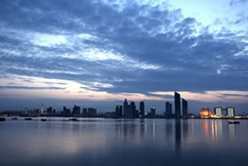
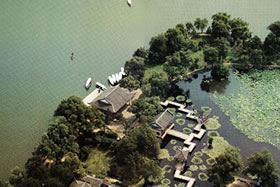
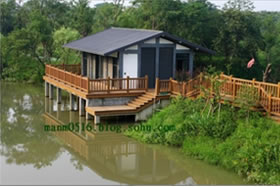

杭州，浙江省省会及政治、经济、文化、科教中心，长江三角洲南翼中心城市。
城内地势平缓，江、河、湖、山交融，古时杭州以其富庶的物产民生、绝色之环境，素有“人间天堂”之称。而现代杭州也正以宜商宜居开放包容的城市性格，成为创业投资的创富天堂一度蝉联福布斯最佳商业城市榜首。

目前，杭州正致力打造观光游、会展游、休闲游“三足鼎立”的新格局：以“三江四湖一山一河一溪三址”为重点发展观光游，以把西博会打造成世界级会展品牌为目标发展会展游，以举办2006年世界休闲博览会为契机发展休闲游。
……旅游休闲、文化创意、电子商务三驾马车拉动杭州服务产业蓬勃发展，以电子信息、光机电一体化、新材料技术、医药和生物工程技术以及环保为主体的高新技术产业初具规模。杭州非公经济比重达64.5%，民营经济活跃。

